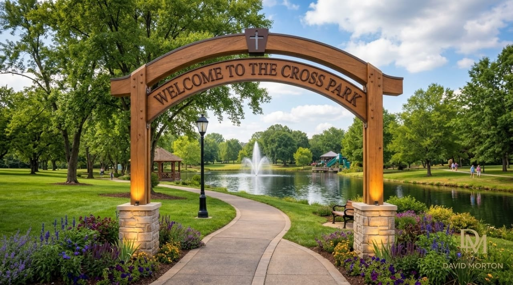
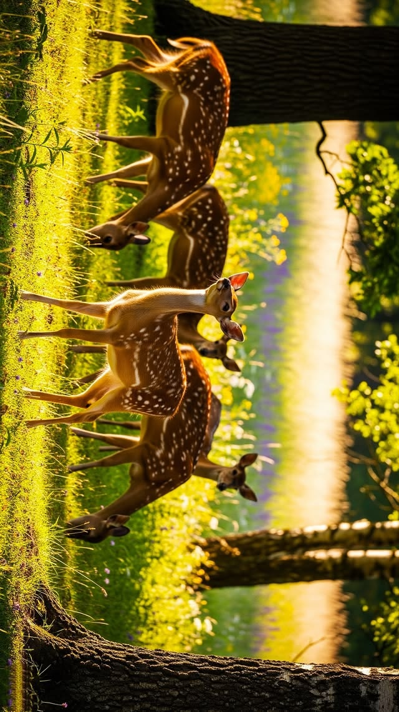
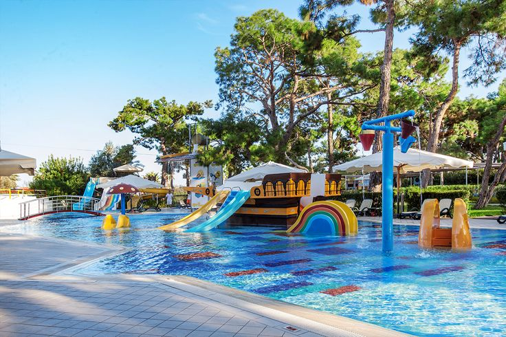

We are located along Leopards Hill Road, 7.4km past state lodge checkpoint in the mikango direction. We offer excellent outdoor environment for parties, get togather and perfect place to get away from.
Dear Parents & School Authorities, Looking for a school outing that’s fun, meaningful, and unforgettable? The Cross Park offers educational tours that go beyond the classroom, helping pupils grow into future leaders and responsible managers of our environment.

ANIMALS
Watch pupils light up as they observe antelope and other game animals roaming freely. It's a powerful way to teach them about:
✔ Animal behavior
✔ Conservation
✔ Biodiversity,
.
💧 EXPERIENCING THE WATER CYCLE
